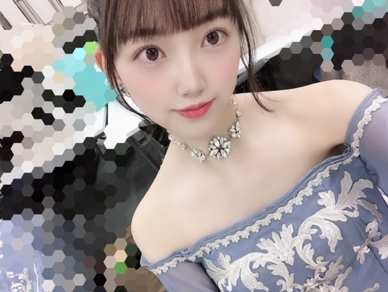
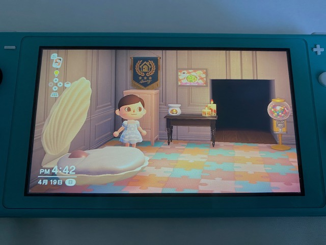
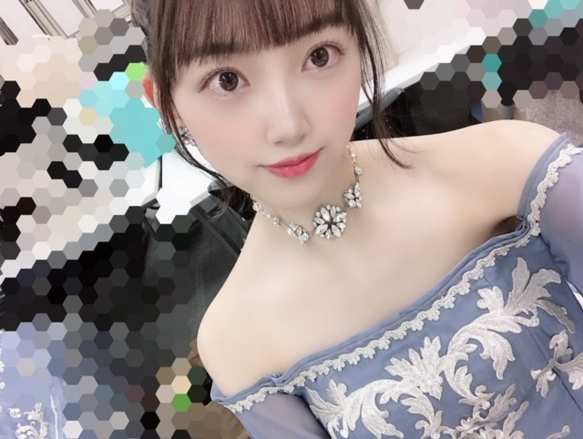
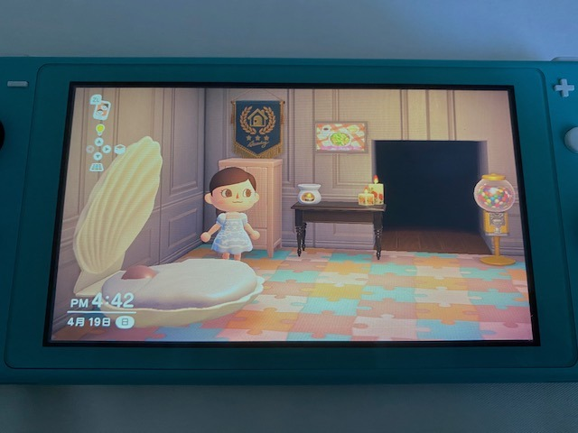

2020/0419Sun#未央奈のおすすめ映画 をご紹介します
皆さんおうち時間
どのようにお過ごしですか？
少しでも早くいつも通りの
日常が戻ってきますように...
当たり前が当たり前ではないこと
感謝しなくてはいけないことを
今回改めて感じました
お身体には気をつけてください!
堀はゲームと映画(ドラマアニメ)を
行き来しています
あと、語学もこの機会に
学ぼうかなって思ったりしてます
語学に詳しい友達に助けてもらいながら
自主勉強頑張ります
はやく字幕無しで見れたらいーな
基本アウトドア派なので
こんなにもおうちにいた事は無くて
でもインドアも悪くないなって
思い始めています
料理も極めよう

こんばんちゃ



私が乃木坂の衣装で1番お気に入りの
2018年紅白歌合戦のブルーのドレスを
デザインしてみました〜
カワイイ
髪型は家にいる時のわたし風
前髪はピンでいつもとめています
さて
私がおすすめする
今見るべき映画
見るべきドラマ
聞くべき曲
のうちの、"映画"
について今日はお話ししようと思います☺︎
いくつかあるのですが
映画 邦画ver
5選しました
" ぼくは明日昨日のきみとデートする "
原作も映画も大好きでDVDも持っています
タイトルの意味が映画を見終わった後に
しっくりくる恋愛の話なのですが
君の名は。みたいな恋愛ストーリーに
異空間要素が詰まった話も好きで
この作品も、
どうしようもない状況で試される2人の愛が
切なくもあり綺麗で、何回観ても泣けます
サントラや映像全体の淡さも好きです
例えば恋人じゃなくても友達や
家族など大好きで大切な人といれる時間って
本当に当たり前じゃないと思うんです
だからこそ気づかなきゃいけない事
言わなくちゃいけない事がたくさんあって
今を生きる人に後悔をしてほしくないので、
そんな意味も込めてこの作品を紹介します
" 海街diary "
是枝監督の作品が好きで
海街diaryが1番お気に入りです
とある姉妹、家族の話で
四季を感じながら進んでいく
日常のお話しなのですが
何となく自己嫌悪に陥っていて
心がぽっかりとあいていたときに
たまたま出会った作品でして
この作品の登場人物の生き方に
踠いてる姿に勇気づけられました
何だかんだ夢のある違う世界の話よりも
わたしが求めているものは日常を切り取った
現実的なお話です
そんな作品達を好きになった理由は、
多分、1番大切なことは日常、
日々の生活の中に潜んでいるんだと思っていて
それを馬鹿なわたしは見落としていたり
どうしても違うもの遠くのものに
目を向けがちで
そんな自分に気づいてからは
人間臭い人間の話を見るのが
自分を救う手段の1つになっていました
もちろん夢が詰まったキラキラした話も好きです
女の子はずっと夢を見たいから。
でも、自分自身の価値を忘れない為に
どうして生きているのか強く再認識する為にも
ヒューマンストーリーは欠かせないです
だから、ホットギミックに出会えた事は
私の今までの
そしてこれからの人生の中でも
大きな宝物となっています
みなさんに影響を与えた作品も聞きたいな〜
あ、話が逸れてしまいました!
では、次の作品
" 湯を沸かすほどの熱い愛 "
家族とは何か
母とは何か
それぞれの愛の力が大きくて強くて
心がぐわんぐわんと揺さぶられた作品です
私にとっても、母は特別な存在で
母はいつも強くてまっすぐと立っていて
私が小さい頃の母の印象は
涙を見せないし弱音を吐かないし
いつも私たちを優先して見守っていてくれた
"強い母親"でした
でも10代後半で
大切なものを守る為に
強くあろうとしていた母に気づき、
わたしが守ろうって決めた事を思い出した作品です
「お母さん」って凄いんだなって
弱さを脆さを知っても尚、
やはり母は私よりもうんと強くて
尊敬しています
私もいつかはそんな女性になれたらいいなと
" 愛がなんだ "
これもまた恋愛の話ですが
デリバリーの焼き鳥を食べながら見たい作品です
もどかしい関係がそれぞれ続くので
なかなかうまくいかない恋模様は
観ていて学ぶことが多くて...
それでいてキャラクターもそれぞれ濃いし
周りにいそうだし自分の中にももしかしたら
潜んでいるかもしれないし
観終わった後は一言で「こうだったよね！」
と言えるわけではなくて観た友達と数時間は
じっくり話したくなる、そんな作品です
哀れだなぁとかかっこ悪いなぁとか
客観的に観てるから思うけど
自分だってそんな感じなんですよね、結局笑
だからかっこ悪くても自分に正直に
生きていかなくちゃなんです
"海がきこえる"
ジブリ作品はどれも好きなのですが
今回の映画のラインナップの流れで
1番ジブリの中でヒューマンドラマみの
強いこの作品を選びました
1人の女の子と男の子が出会い
いろんなことが起こっていく話で
ぜひ、夏の夜に観てほしい作品です
結構女の子が自由気ままで男の子を
振り回すナチュラル小悪魔タイプの子なのですが
この作品に似た洋画で「最低で最高のサリー」
っていう作品のサリーもそのタイプで
そんな女の子を私はどうも庇ってしまうんですよね
でも、まっすぐな恋愛もいいけど
ついたり離れたりのもどかしい関係も
観ていて私は好きですね
番外編
わたしから女の子におすすめしたい作品
" 勝手にふるえてろ "
" シンデレラストーリー "
" アメリ "
" ヘイフラワーとキルトシュー "
" シェイプオブウォーター "
" 愛がなんだ "
" 彼女がその名を知らない鳥たち "
ぜひに!
よかったら観て観てください☺︎
#未央奈のおすすめ映画
でぜひ感想をお聞かせください✨
外食ができないので
お家でサムギョプサル作りました!

肉の塊を焼いてから切ってまたちゃんと焼いて
キムチも焼いて ごま油に塩をいれて...
美味しかったー。
これを深夜に食べたので胃もたれしたこと以外は
100点でした!
でははは
皆さんおうち時間
どのようにお過ごしですか？
少しでも早くいつも通りの
日常が戻ってきますように...
当たり前が当たり前ではないこと
感謝しなくてはいけないことを
今回改めて感じました
お身体には気をつけてください!
堀はゲームと映画(ドラマアニメ)を
行き来しています
あと、語学もこの機会に
学ぼうかなって思ったりしてます
語学に詳しい友達に助けてもらいながら
自主勉強頑張ります
はやく字幕無しで見れたらいーな
基本アウトドア派なので
こんなにもおうちにいた事は無くて
でもインドアも悪くないなって
思い始めています
料理も極めよう
こんばんちゃ


私が乃木坂の衣装で1番お気に入りの
2018年紅白歌合戦のブルーのドレスを
デザインしてみました〜
カワイイ
髪型は家にいる時のわたし風
前髪はピンでいつもとめています
さて
私がおすすめする
今見るべき映画
見るべきドラマ
聞くべき曲
のうちの、"映画"
について今日はお話ししようと思います☺︎
いくつかあるのですが
映画 邦画ver
5選しました
" ぼくは明日昨日のきみとデートする "
原作も映画も大好きでDVDも持っています
タイトルの意味が映画を見終わった後に
しっくりくる恋愛の話なのですが
君の名は。みたいな恋愛ストーリーに
異空間要素が詰まった話も好きで
この作品も、
どうしようもない状況で試される2人の愛が
切なくもあり綺麗で、何回観ても泣けます
サントラや映像全体の淡さも好きです
例えば恋人じゃなくても友達や
家族など大好きで大切な人といれる時間って
本当に当たり前じゃないと思うんです
だからこそ気づかなきゃいけない事
言わなくちゃいけない事がたくさんあって
今を生きる人に後悔をしてほしくないので、
そんな意味も込めてこの作品を紹介します
" 海街diary "
是枝監督の作品が好きで
海街diaryが1番お気に入りです
とある姉妹、家族の話で
四季を感じながら進んでいく
日常のお話しなのですが
何となく自己嫌悪に陥っていて
心がぽっかりとあいていたときに
たまたま出会った作品でして
この作品の登場人物の生き方に
踠いてる姿に勇気づけられました
何だかんだ夢のある違う世界の話よりも
わたしが求めているものは日常を切り取った
現実的なお話です
そんな作品達を好きになった理由は、
多分、1番大切なことは日常、
日々の生活の中に潜んでいるんだと思っていて
それを馬鹿なわたしは見落としていたり
どうしても違うもの遠くのものに
目を向けがちで
そんな自分に気づいてからは
人間臭い人間の話を見るのが
自分を救う手段の1つになっていました
もちろん夢が詰まったキラキラした話も好きです
女の子はずっと夢を見たいから。
でも、自分自身の価値を忘れない為に
どうして生きているのか強く再認識する為にも
ヒューマンストーリーは欠かせないです
だから、ホットギミックに出会えた事は
私の今までの
そしてこれからの人生の中でも
大きな宝物となっています
みなさんに影響を与えた作品も聞きたいな〜
あ、話が逸れてしまいました!
では、次の作品
" 湯を沸かすほどの熱い愛 "
家族とは何か
母とは何か
それぞれの愛の力が大きくて強くて
心がぐわんぐわんと揺さぶられた作品です
私にとっても、母は特別な存在で
母はいつも強くてまっすぐと立っていて
私が小さい頃の母の印象は
涙を見せないし弱音を吐かないし
いつも私たちを優先して見守っていてくれた
"強い母親"でした
でも10代後半で
大切なものを守る為に
強くあろうとしていた母に気づき、
わたしが守ろうって決めた事を思い出した作品です
「お母さん」って凄いんだなって
弱さを脆さを知っても尚、
やはり母は私よりもうんと強くて
尊敬しています
私もいつかはそんな女性になれたらいいなと
" 愛がなんだ "
これもまた恋愛の話ですが
デリバリーの焼き鳥を食べながら見たい作品です
もどかしい関係がそれぞれ続くので
なかなかうまくいかない恋模様は
観ていて学ぶことが多くて...
それでいてキャラクターもそれぞれ濃いし
周りにいそうだし自分の中にももしかしたら
潜んでいるかもしれないし
観終わった後は一言で「こうだったよね！」
と言えるわけではなくて観た友達と数時間は
じっくり話したくなる、そんな作品です
哀れだなぁとかかっこ悪いなぁとか
客観的に観てるから思うけど
自分だってそんな感じなんですよね、結局笑
だからかっこ悪くても自分に正直に
生きていかなくちゃなんです
"海がきこえる"
ジブリ作品はどれも好きなのですが
今回の映画のラインナップの流れで
1番ジブリの中でヒューマンドラマみの
強いこの作品を選びました
1人の女の子と男の子が出会い
いろんなことが起こっていく話で
ぜひ、夏の夜に観てほしい作品です
結構女の子が自由気ままで男の子を
振り回すナチュラル小悪魔タイプの子なのですが
この作品に似た洋画で「最低で最高のサリー」
っていう作品のサリーもそのタイプで
そんな女の子を私はどうも庇ってしまうんですよね
でも、まっすぐな恋愛もいいけど
ついたり離れたりのもどかしい関係も
観ていて私は好きですね
番外編
わたしから女の子におすすめしたい作品
" 勝手にふるえてろ "
" シンデレラストーリー "
" アメリ "
" ヘイフラワーとキルトシュー "
" シェイプオブウォーター "
" 愛がなんだ "
" 彼女がその名を知らない鳥たち "
ぜひに!
よかったら観て観てください☺︎
#未央奈のおすすめ映画
でぜひ感想をお聞かせください✨
外食ができないので
お家でサムギョプサル作りました!
肉の塊を焼いてから切ってまたちゃんと焼いて
キムチも焼いて ごま油に塩をいれて...
美味しかったー。
これを深夜に食べたので胃もたれしたこと以外は
100点でした!
でははは
2020/04/19 19:12


コメント(377)
ズルイやつはいつだってモテる。
真っ正直でありたいです。
(愚痴になっとるがな笑)
フィクションをつくる人は等しく、
ろくでもない人間です笑
褒め言葉であり、
皮肉でもあります。
ただ、
アイドルは現実の中でドラマをつくる。
だから、尊敬しているんです。
頭の中でパズルみたいにつくった世界じゃない。
汗、
涙、
痛み、
いろんなことでヘトヘトになりながら、
観ている人を感動させるから好きなんです。
いつもありがとう
昨日、何年かぶりにドラえもんの映画を見たんだけど、大人になってもドラえもんは何かを教えてくれるような気がした。
子どもの頃は何気なく見てた映画だけど、今改めて見てみるとまた違った見方ができて楽しい。
これも今のこんな状況だからこそできること。
少しは時間を有効に使えているなぁと感じる瞬間でした。
僕もちょっと前にNetflixで『僕は明日昨日のきみとデートする』見ました！なかなか映画で泣かないんですが、この映画はボロボロ泣いてしまいました 少し前、僕もこの映画を友達にオススメしようと思ったんですが、説明出来なくて伝えられなくて、
でも未央奈さんは説明が上手いですね！尊敬です！( * ॑꒳ ॑* )✨
( ・ω・)∩ｼﾂﾓｰﾝ！
·オススメのマンガか、小説教えてください！
では、また！╰(*´︶`*)♡
未央奈の映画の話し、元気がもらえるよ！
ありがとう！サムギョプサル美味しそう！
今回のブログ、長めで大満足。
現実味、人間味の強い作品ってイイですよね。
自分自身を見つめ直すいい機会で、
今までの景色が違って見えるような、そんな気がします。
僕は恋愛ものにあまり興味が無くて、でも、
「君の膵臓を食べたい」を観て、
自分の存在意義、大切な人との日々の在り方について
深く考えさせられました。そして素直に、感動した❗️
ここ数日で未央奈がブログを更新してくれるっていう、
小さな幸せを見つけることが出来ました。
僕も紅白の衣装、くすみカラーで好きです。
未央奈の手料理見たかったから嬉しいです❗️
サンチュ巻きたい。
次のブログと写真集楽しみです❗️
紅白の衣装すごく好きです！
未央奈さんのおすすめ映画見てみます！
今回のブログは中身が濃い〜ですね。
最近は新型コロナの影響で乃木坂46の握手会も延期、ファンとの接点もないけど、こういう状況はテレビの向こうにいる芸能人と変わらないので、今は仕方ないけど、やっぱり会う機会はなくなって欲しくないなと今回改めて思いました。(未央奈の言葉を一部パクらせてもらいました 笑)
未央奈は映画をたくさん観ているから、いろいろ詳しいよね。
私は最近観てないな。
邦画、洋画を問わず、現実的にあり得ない設定を見てしまうと、何か冷めてしまいます。
まあアニメは別ですけどね。
読んでいて、ちょっと未央奈と同じ感覚があるかも？と思った。
海街diaryには興味持ちました。機会があれば観てみたい。
次回以降の曲のお話は興味深々です。
オススメ映画ありがとう
僕は昨日〜は本当大好きで何度も観て何度も泣きました！
あと海がきこえるも大好きです。あんまり知ってる人いないけど…実写もアニメも両方好きです。未央奈はアニメかな？
君の膵臓を食べたいもオススメです！
よかったら是非観てみてね〜
では身体には気を付けてください
楽しいことは楽しいと思った事が楽しいこと？
明日はきっと今日よりも！
手続きやその他用事があって出かけなきゃいけないことがあるけど、今外出するのは少し怖いですね。
先延ばしにしちゃっています。
今月中には行かないと。
外出自粛中でも、手続きは待ってくれないんですよね。
変な国です。
僕は明日昨日の君とデートする
今度見てみます！
僕は君の膵臓をたべたいがオススメです！
質問……次はどんな髪型にする予定ですか？
すずちゃんが可愛い。
でも、もちろん未央奈のことも大好きだよ❤️
この水色の衣装可愛いよね！！
私も好き〜！
オススメ映画見るね！
料理作ってるメンバー多いけど堀ちゃんは本格的なのだね！
自分のオススメは、ドラマで過保護のカホコです。最後までみたら絶対感動するし、すきなドラマになると思います。もし見てなかったら見て欲しいです(^^)
未央奈さんのインスタ見てます。この前乃木中でやってた「ライス下さい」面白くてよく見てます。
僕はあまり映画を見ないのでよくわかりませんが、海街ダイアリーはＤＶＤで見たことがあります。四姉妹のキャラや性格がみんな違っていて、それぞれが周りの人との関わりを通じて、他人を理解をし合うことができるようになり、周りの人々との縁の大切さを教えてもらったような気がします。今思うと周りの人と交流できていることが幸せなんだなって思います。
そして、僕は食べるのが好きなので、サムギョプサルに目が行ってしまいます笑。今は自宅待機中なのですがもっと、日々が充実するよう方法を教えてもらえると嬉しいです。
おいしそうなお肉だ～。笑
僕も数日前に食べたんだよ。
お店がテイクアウトやってたので、買ってお家で日本酒の緑茶割りと一緒に食べました。笑
サンチュもついてて、おいしかったです。
店員さんも、お店の雰囲気も良くて、いいとこみつけたなあ～。
ごま油に塩って合うんだね。
知らなかったです。今度やってみよっと。
キムチ好きなのでだいたい冷蔵庫に常備してますが、チャーハンとかに入れて炒めたり、鍋に入れたりはしますが、キムチ単体で焼いて食べたことなかったのでそれも試してみます。
食材はいろんな調理方法があって、料理は楽しいですね。
深夜に食べて、胃もたれしちゃたみたいですが、それもまた掘ちゃんにとってのかけがえのない時間で、生きてる証でもあり、幸せなことなんだよね。
めちゃうまそー 腹減ってきたー
週末はゲームして、アマゾンプライムでアニメ見て、テレビ見て過ごしてたよ。
映画も良いね。まだ大変な状況が続くけど、体調管理には気をつけようね。
デザイン凄い！堀ちゃんやっぱりこういうセンス抜群だね。
映画字幕無しは本当に憧れる！勉強しようかな
未央奈のおすすめ映画観てみますー！
合理的な語学習得に関してだけど、「翻訳は厳禁」ゆえ、日本語字幕でなくて習得対象言語の原語字幕にして、セリフ真似（堀ちゃんがジブリ映画で見事にやれてる例の特技）できるようになるぐらい繰り返し見たりするのを強くレコメンするのよ〜ん
おすすめ映画ありがとうございます✨
未央奈さんの想いのこもった説明のおかげで、観たことない作品は観たいと思ったし既に観た作品もまた観返したいと思いました。
真夜中のサムギョプサルはハードですね…
料理、以前に白石さんも作るという話をされていた豚汁作りにハマっています。栄養とれるし極めるべく研究中です。
免疫力高めて日々頑張りましょう✨
オオスメの気になった映画は「ぼくは明日昨日のきみとデートする」です！
僕は仕事は通常営業ですけど休みの日に観てみたいなと思いました！
サムギョプサル755でも見たけどおいしそう！
乃木坂工事中観ました！
堀さん水筒でゆで卵割るんだぁとビックリしました笑
窓で割ってるの堀さんだと思ってました
失礼しました
未央奈さんのインスタ見てます。この前乃木中でやってた「ライス下さい」面白くてよく見てます。
僕はあまり映画を見ないのでよくわかりませんが、海街ダイアリーはDVDで見たことがあります。四姉妹のキャラや性格がみんな違っていて、それぞれが周りの人との関わりを通じて、他人を理解をし合うことができるようになり、周りの人々との縁の大切さを教えてもらったような気がします。今思うと周りの人と交流できていることが幸せなんだなって思います。
そして、僕は食べるのが好きなので、サムギョプサルに目が行ってしまいます笑。今は自宅待機中なのですがもっと、日々が充実するよう方法を教えてもらえると嬉しいです。
他には、ルームとかショートタームとかテラビシアにかける橋とかペネロピとかムーンライズキングダムとか絶対好きそうな気がする・・・！？
これからグロリア観てから寝よう・・・。
体調に気をつけて過ごしましょう！
最近ブログをたくさん更新してくれるのでありがたいです。
堀ちゃんのブログからは乃木坂愛・二期生愛が感じられて
いいなーと思います。
今回の話は特に面白かった！俺も一つづつ見ていこうと思います。
これから洋画編とかドラマ編とか音楽編とか続くんだよね？
楽しみにしてます！
こんな時期だからあまり楽しいことないけど、じっくりとこういう
話を聞くチャンスでもあるから。
これからもいろんな話を聞かせて欲しい。つまんない話でも全然
構いませんので。
では、健康に気をつけてね。
映画と言えば、今週末、久しぶりにDVDを借りてきて見ました。
It the end です。
３時間近くは、さすがに見るのに疲れました。
でも、なかなか終わりが見えない展開は、引き込まれましたね。
最近TVも、再放映とか再編集ものが多いので、つまらないんですよね。だから、久々に借りようって思った訳です。
コロナが早く収束して、通常の放送になってくれないですかね。
是非ライブとかSHOWROOMとか、インスタライブとかで披露して欲しい！
僕は明日昨日の君とデートする同じく泣いた
めっちゃいいよね！
体調には気をつけて！
可愛くてまた見たいなあ〜と思ってるのですが、ライブでは着ないのですか？？踊りにくいとか？
でも写真載せてくれて嬉しいです♡♡ありがとう♡
かわいい、好き
僕も今日は家で友達と焼き肉が作んた、ちょっと食べ過ぎるでも美味しだったww
未央奈ちゃんおすすめの映画が気に入るのでこれから見えましょう
当たり前が当たり前ではないので、僕も未央奈ちゃんに応援がつつきますよ
今回は未央奈ちゃんがお薦めする５作品の映画の
感想文の内容表現が上手に感じた！ 文庫本に出てき
そうななかなか難しい漢字がいくつか出てきたし、文章の内容がなかなか難しく感じた
普段から様々な画の無い本を読んでるいるから自然に
文章力が鍛えられたのかもね
俺は緊急事態制限が全国的に発令されて自宅に
長時間いるときはスマホゲームしたり、YouTube
みたり、軽く筋トレをやってるよ
今回のブログ更新もお疲れ様です！ いつもより
長い文章だったけど、全て読んだよ
でははは
僕はギターをいじったり動画を見てギターの研究をしたりしてるよ。
未央奈も身体に気をつけてね。
語学に興味あるんだね。僕ももっと英語の勉強しようと思ってた。
料理も良いね。未央奈料理上手そう。未央奈の手料理食べてみたいなあ。
このブルーの衣装すごく可愛いよね。どうぶつの森はこういうことができるのかあ。僕は未だにどういうゲームなのかよくわかってないのよね。
オススメの映画ありがとう！これだけたっぷり語られたらどれも見たくなるよ。
海街diaryは見たよ。日常の心理描写から何か考えさせられる作品って良いよね。
僕が影響を受けた作品は「レナードの朝」かなあ。
サムギョプサル美味しそう！
では！
おうち時間！
映画観たり昼寝したり漫画読んだり勉強したりって感じ！
そうだねー。早く日常戻ってきて。。
当たり前が当たり前ではない。うんうん。
みおちゃんもねー！お身体に気をつけて！☺️
いいねー！語学学習。
わかる！字幕無しで観れるようになるの憧れる。海外映画の笑いのタイミングで意味がわからなくて笑えないのは結構悔しいから！笑
こんなに人に会わないことが未だかつてないから何しようか悩みすぎて昼寝しちゃったりするんだけど(サボり)、こういう家にずっといるのも貴重な時間なのかなと思って色々やってる〜
みおちゃんの料理おいしそう！
こっちも料理してる。卵を溶くときなんかパティシエか料理人みたいな顔でやってるわ。(気分だけ！)
あ、どうも。こんばんちゃっす。
うひょー。2018年紅白のブルーのドレス大好き〜！！！超きれい。
あつ森でデザインしたんだ！かわいっ。
いいね。いいね。かわいい前髪♪
なんか秘密の部屋できてるやん！！
いろいろ開拓してるんだね。料理も変わってる。朝食かな？
よっ、映画見様っ！
邦画ver.ほぅ。
ブログ読んでからぼく明日観たよ〜
恋愛ストーリーに異空間要素。こっちもすき。
終盤視点が変わってヒロイン側からみた物語になるところですごく泣ける。
主題歌最高。。
海街diary
1番大切なことは日常。日々の生活の中に潜んでる。すごいね、みおちゃんは。いつも感心しちゃう。
ホットギミック。みおちゃんを女優にした作品(^-^)
影響を与えた作品かぁ。
映画が好きになったきっかけはゴジラとかスターウォーズかなぁ。小学生のときかな、父親と映画館で観て迫力がすごくてかっけぇ。と思ったのが最初。映画監督が小学生のときの夢。
そっからは割と漫画だね、ワンピースとかガッシュとかあだち充さんとかに"人間性"を教わった感じ。笑
1番世界観で好きなのは川村元気さんの本だね。ぜひ読んでほしい！！！
たぶん、"心"を教えてくれたきっかけ。
こっちの個人的な話なんだけども、本も音楽も映画も最初の1行、1音にすっごく注目してて、川村さんの本はどれも物語の始まり方が素晴らしいんよー！世界観に魅かれる感じ。
あと君の名は。もこの方がプロデュースしてるー。
ふぅ。戻ってきた。✌️
湯を沸かすほどの熱い愛！ほんとに泣いた作品。
ほっこりする話だね。みおちゃんのお母さんに会いたくなる。
愛がなんだ
笑った。そのイメージわかる。笑
カッコ悪くても自分に正直に。うんうん。
みおちゃん映画評論家できるよ！笑
いつか本出してね、買うわ。
海がきこえる
唯一観たことがない作品〜！
早く観たい。夏の夜にも観よっと♪
第三者の視点だとおもろいよね。笑
当事者だったらあわわわわって感じになるわ。
番外編！女の子かぁ。
#未央奈のおすすめ映画
おけ！
サムギョプサル！おいしそー！✨
胃もたれ。笑う
100点！
では〜明日からもがんばりましょう。
今日もみおちゃんが大好き。
吹き替えとか字幕じゃ英語本来の細かいニュアンスが伝わんないことあるから英語勉強して字幕なしで見たい！
語学勉強頑張って！応援してます☺︎
毎回楽しく読んでますっ
映画の感想で「愛がなんだ」のことを挙げていて、堀ちゃんの感想に共感出来るな～って思うところがありました。
男女の恋愛ってなかなかそう思うように上手くいかないこともあって、そんな様子を見ていてだからこそ、そこから感じる学ぶところもあって。
近いうち、ブルーレイを持っているのでまた見返してみようって思ってます。
印象的な映画の感想を共感出来て、ちょっと嬉しくなりましたっ
でははは
(｀∀´)d ﾄｩｰｽ!
家にいることが多くなったこの頃、堀ちゃんのブログには本当に楽しみなことの一つです。ありがとう！
紅白の衣装すごく好きなんです❗
未央奈ちゃんは誰にも負けない特技とかある？
コメントする